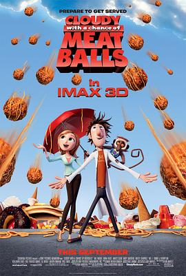

天降美食 / Cloudy with a Chance of Meatballs
又名：美食从天而降 / 美食风球(港) / 食破天惊(台) / 多云，有时有肉丸雨 / 天降小肉丸 / 天上掉馅饼
真的是，交给皮克斯，十五分钟短片搞定
作品信息
| 导演 | 菲尔·罗德 / 克里斯托弗·米勒 |
| 编剧 | 菲尔·罗德 / 克里斯托弗·米勒 / Judi Barrett / Ron Barrett |
| 主演 | 比尔·哈德尔 / 安娜·法瑞丝 / 詹姆斯·肯恩 / 安迪·萨姆伯格 / 布鲁斯·坎贝尔 / 劳伦斯·特劳德 / 鲍比·J·汤普森 / 本杰明·布拉特 / 尼尔·帕特里克·哈里斯 / 阿尔·罗克 / 劳伦·格拉汉姆 / 威尔·福特 |
| 类型 | 喜剧 / 动画 / 奇幻 |
| 制片国家/地区 | 美国 |
| 语言 | 英语 |
| 上映日期 | 2009-09-18 |
| 片长 | 90分钟 |
| IMDb | tt0844471 |
最后一次看到是 2026-08-12T21:13:15+08:00 · 豆瓣原页